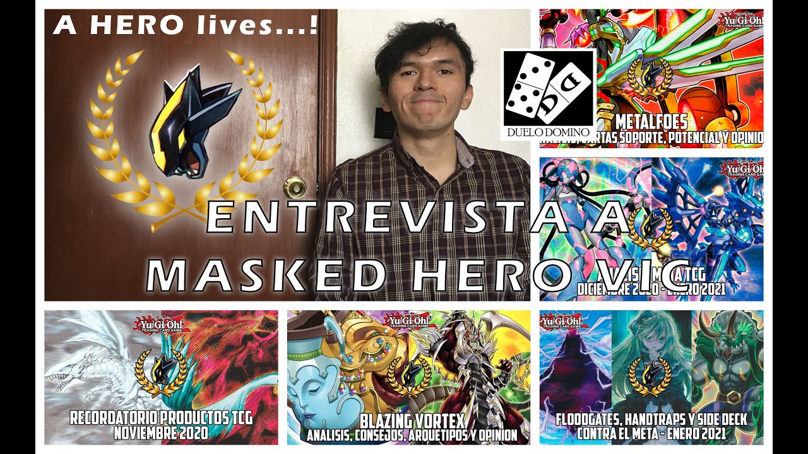

Principal
¿Por qué jugar Yugioh? 1
¿Por qué jugar Yugioh? 2
¿Dónde jugarlo?
¿Armar Deck?
Reglas Básicas
¡Aprende y venceras!
Recomendaciones Extras TCG
Diviertete!
Contactos
Recomendaciones Extras TCG
